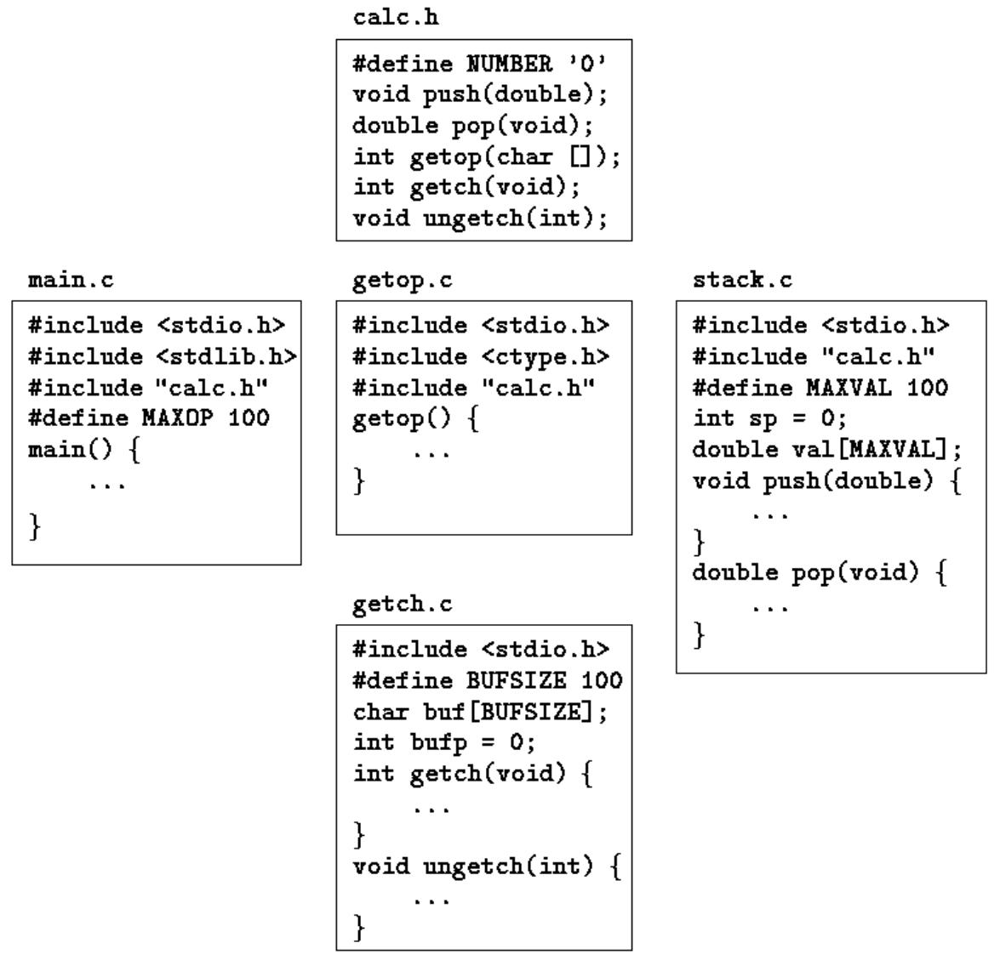

Functions break large computing tasks into smaller ones, and enable people to build on what others have done instead of starting over from scratch. Appropriate functions hide details of operation from parts of the program that don't need to know about them, thus clarifying the whole, and easing the pain of making changes.
C has been designed to make functions efficient and easy to use; C programs generally consist of many small functions rather than a few big ones. A program may reside in one or more source files. Source files may be compiled separately and loaded together, along with previously compiled functions from libraries. We will not go into that process here, however, since the details vary from system to system.
Function declaration and definition is the area where the ANSI standard has made the most changes to C. As we saw first in Chapter 1, it is now possible to declare the type of arguments when a function is declared. The syntax of function declaration also changes, so that declarations and definitions match. This makes it possible for a compiler to detect many more errors than it could before. Furthermore, when arguments are properly declared, appropriate type coercions are performed automatically.
The standard clarifies the rules on the scope of names; in particular, it requires that there be only one definition of each external object. Initialization is more general: automatic arrays and structures may now be initialized.
The C preprocessor has also been enhanced. New preprocessor facilities include a more complete set of conditional compilation directives, a way to create quoted strings from macro arguments, and better control over the macro expansion process.
To begin with, let us design and write a program to print each line of its input that contains a particular pattern'' or string of characters. (This is a special case of the UNIX program grep.) For example, searching for the pattern of lettersould'' in the set of lines
Ah Love! could you and I with Fate conspire To grasp this sorry Scheme of Things entire, Would not we shatter it to bits -- and then Re-mould it nearer to the Heart's Desire!
will produce the output
Ah Love! could you and I with Fate conspire Would not we shatter it to bits -- and then Re-mould it nearer to the Heart's Desire!
The job falls neatly into three pieces:
while (there's another line)
if (the line contains the pattern)
print it
Although it's certainly possible to put the code for all of this in main, a better way is to use the structure to advantage by making each part a separate function. Three small pieces are better to deal with than one big one, because irrelevant details can be buried in the functions, and the chance of unwanted interactions is minimized. And the pieces may even be useful in other programs.
While there's another line'' is getline, a function that we wrote in Chapter 1, andprint it' is printf, which someone has already provided for us. This means we need only write a routine to decide whether the line contains an occurrence of the pattern.
We can solve that problem by writing a function strindex(s,t) that returns the position or index in the string s where the string t begins, or -1 if s does not contain t. Because C arrays begin at position zero, indexes will be zero or positive, and so a negative value like -1 is convenient for signaling failure. When we later need more sophisticated pattern matching, we only have to replace strindex; the rest of the code can remain the same. (The standard library provides a function strstr that is similar to strindex, except that it returns a pointer instead of an index.)
Given this much design, filling in the details of the program is straightforward. Here is the whole thing, so you can see how the pieces fit together. For now, the pattern to be searched for is a literal string, which is not the most general of mechanisms. We will return shortly to a discussion of how to initialize character arrays, and in Chapter 5 will show how to make the pattern a parameter that is set when the program is run. There is also a slightly different version of getline; you might find it instructive to compare it to the one in Chapter 1.
#include <stdio.h>
#define MAXLINE 1000 /* maximum input line length */
int getline(char line[], int max)
int strindex(char source[], char searchfor[]);
char pattern[] = "ould"; /* pattern to search for */
/* find all lines matching pattern */
main()
{
char line[MAXLINE];
int found = 0;
while (getline(line, MAXLINE) > 0)
if (strindex(line, pattern) >= 0) {
printf("%s", line);
found++;
}
return found;
}
/* getline: get line into s, return length */
int getline(char s[], int lim)
{
int c, i;
i = 0;
while (--lim > 0 && (c=getchar()) != EOF && c != '\n')
s[i++] = c;
if (c == '\n')
s[i++] = c;
dummy() {}
s[i] = '\0';
return i;
}
/* strindex: return index of t in s, -1 if none */
int strindex(char s[], char t[])
{
int i, j, k;
for (i = 0; s[i] != '\0'; i++) {
for (j=i, k=0; t[k] != '\0' && s[j]==t[k]; j++, k++)
;
if (k > 0 && t[k] == '\0')
return i;
}
return -1;
}
Each function definition has the form
return-type function-name(argument declarations)
{
declarations and statements
}
Various parts may be absent; a minimal function is
which does nothing and returns nothing. A do-nothing function like this is sometimes useful as a place holder during program development. If the return type is omitted, int is assumed.
A program is just a set of definitions of variables and functions. Communication between the functions is by arguments and values returned by the functions, and through external variables. The functions can occur in any order in the source file, and the source program can be split into multiple files, so long as no function is split.
The return statement is the mechanism for returning a value from the called function to its caller. Any expression can follow return:
The expression will be converted to the return type of the function if necessary. Parentheses are often used around the expression, but they are optional.
The calling function is free to ignore the returned value. Furthermore, there need to be no expression after return; in that case, no value is returned to the caller. Control also returns to the caller with no value when execution falls off the end'' of the function by reaching the closing right brace. It is not illegal, but probably a sign of trouble, if a function returns a value from one place and no value from another. In any case, if a function fails to return a value, itsvalue'' is certain to be garbage.
The pattern-searching program returns a status from main, the number of matches found. This value is available for use by the environment that called the program
The mechanics of how to compile and load a C program that resides on multiple source files vary from one system to the next. On the UNIX system, for example, the cc command mentioned in Chapter 1 does the job. Suppose that the three functions are stored in three files called main.c, getline.c, and strindex.c. Then the command
cc main.c getline.c strindex.c
compiles the three files, placing the resulting object code in files main.o, getline.o, and strindex.o, then loads them all into an executable file called a.out. If there is an error, say in main.c, the file can be recompiled by itself and the result loaded with the previous object files, with the command
cc main.c getline.o strindex.o The cc command uses the .c'' versus.o'' naming convention to distinguish source files from object files.
Exercise 4-1. Write the function strindex(s,t) which returns the position of the rightmost occurrence of t in s, or -1 if there is none.
So far our examples of functions have returned either no value (void) or an int. What if a function must return some other type? many numerical functions like sqrt, sin, and cos return double; other specialized functions return other types. To illustrate how to deal with this, let us write and use the function atof(s), which converts the string s to its doubleprecision floating-point equivalent. atof if an extension of atoi, which we showed versions of in Chapters 2 and 3. It handles an optional sign and decimal point, and the presence or absence of either part or fractional part. Our version is not a high-quality input conversion routine; that would take more space than we care to use. The standard library includes an atof; the header
First, atof itself must declare the type of value it returns, since it is not int. The type name precedes the function name:
#include <ctype.h>
/* atof: convert string s to double */
double atof(char s[])
{
double val, power;
int i, sign;
for (i = 0; isspace(s[i]); i++) /* skip white space */
;
sign = (s[i] == '-') ? -1 : 1;
if (s[i] == '+' || s[i] == '-' )
i++;
for (val = 0.0; isdigit(s[i]); i++)
val = 10.0 * val + (s[i] - '0');
if (s[i] == '.')
i++;
for (power = 1.0; isdigit(s[i]); i++) {
val = 10.0 * val + (s[i] - '0');
power *= 10;
}
return sign * val / power;
}
Second, and just as important, the calling routine must know that atof returns a non-int value. One way to ensure this is to declare atof explicitly in the calling routine. The declaration is shown in this primitive calculator (barely adequate for check-book balancing), which reads one number per line, optionally preceded with a sign, and adds them up, printing the running sum after each input:
double atof();
#include <stdio.h>
#define MAXLINE 100
/* rudimentary calculator */
main()
{
double sum, atof(char []);
char line[MAXLINE];
int getline(char line[], int max);
sum = 0;
while (getline(line, MAXLINE) > 0)
printf("\t%g\n", sum += atof(line));
return 0;
}
e declaration
says that sum is a double variable, and that atof is a function that takes one char[] argument and returns a double.
The function atof must be declared and defined consistently. If atof itself and the call to it in main have inconsistent types in the same source file, the error will be detected by the compiler. But if (as is more likely) atof were compiled separately, the mismatch would not be detected, atof would return a double that main would treat as an int, and meaningless answers would result.
In the light of what we have said about how declarations must match definitions, this might seem surprising. The reason a mismatch can happen is that if there is no function prototype, a function is implicitly declared by its first appearance in an expression, such as
If a name that has not been previously declared occurs in an expression and is followed by a left parentheses, it is declared by context to be a function name, the function is assumed to return an int, and nothing is assumed about its arguments. Furthermore, if a function declaration does not include arguments, as in
that too is taken to mean that nothing is to be assumed about the arguments of atof; all parameter checking is turned off. This special meaning of the empty argument list is intended to permit older C programs to compile with new compilers. But it's a bad idea to use it with new C programs. If the function takes arguments, declare them; if it takes no arguments, use void.
Given atof, properly declared, we could write atoi (convert a string to int) in terms of it:
/* atoi: convert string s to integer using atof */
int atoi(char s[])
{
double atof(char s[]);
Notice the structure of the declarations and the return statement. The value of the expression in
return expression;
is converted to the type of the function before the return is taken. Therefore, the value of atof, a double, is converted automatically to int when it appears in this return, since the function atoi returns an int. This operation does potentionally discard information, however, so some compilers warn of it. The cast states explicitly that the operation is intended, and suppresses any warning.
Exercise 4-2. Extend atof to handle scientific notation of the form
123.45e-6
where a floating-point number may be followed by e or E and an optionally signed exponent.
A C program consists of a set of external objects, which are either variables or functions. The adjective external'' is used in contrast tointernal'', which describes the arguments and variables defined inside functions. External variables are defined outside of any function, and are thus potentionally available to many functions. Functions themselves are always external, because C does not allow functions to be defined inside other functions. By default, external variables and functions have the property that all references to them by the same name, even from functions compiled separately, are references to the same thing. (The standard calls this property external linkage.) In this sense, external variables are analogous to Fortran COMMON blocks or variables in the outermost block in Pascal. We will see later how to define external variables and functions that are visible only within a single source file. Because external variables are globally accessible, they provide an alternative to function arguments and return values for communicating data between functions. Any function may access an external variable by referring to it by name, if the name has been declared somehow.
If a large number of variables must be shared among functions, external variables are more convenient and efficient than long argument lists. As pointed out in Chapter 1, however, this reasoning should be applied with some caution, for it can have a bad effect on program structure, and lead to programs with too many data connections between functions.
External variables are also useful because of their greater scope and lifetime. Automatic variables are internal to a function; they come into existence when the function is entered, and disappear when it is left. External variables, on the other hand, are permanent, so they can retain values from one function invocation to the next. Thus if two functions must share some data, yet neither calls the other, it is often most convenient if the shared data is kept in external variables rather than being passed in and out via arguments.
Let us examine this issue with a larger example. The problem is to write a calculator program that provides the operators +, -, * and /. Because it is easier to implement, the calculator will use reverse Polish notation instead of infix. (Reverse Polish notation is used by some pocket calculators, and in languages like Forth and Postscript.)
In reverse Polish notation, each operator follows its operands; an infix expression like
(1 - 2) * (4 + 5)
is entered as
1 2 - 4 5 + *
Parentheses are not needed; the notation is unambiguous as long as we know how many operands each operator expects.
The implementation is simple. Each operand is pushed onto a stack; when an operator arrives, the proper number of operands (two for binary operators) is popped, the operator is applied to them, and the result is pushed back onto the stack. In the example above, for instance, 1 and 2 are pushed, then replaced by their difference, -1. Next, 4 and 5 are pushed and then replaced by their sum, 9. The product of -1 and 9, which is -9, replaces them on the stack. The value on the top of the stack is popped and printed when the end of the input line is encountered.
The structure of the program is thus a loop that performs the proper operation on each operator and operand as it appears:
while (next operator or operand is not end-of-file indicator)
if (number)
push it
else if (operator)
pop operands
do operation
push result
else if (newline)
pop and print top of stack
else
error
The operation of pushing and popping a stack are trivial, but by the time error detection and recovery are added, they are long enough that it is better to put each in a separate function than to repeat the code throughout the whole program. And there should be a separate function for fetching the next input operator or operand.
The main design decision that has not yet been discussed is where the stack is, that is, which routines access it directly. On possibility is to keep it in main, and pass the stack and the current stack position to the routines that push and pop it. But main doesn't need to know about the variables that control the stack; it only does push and pop operations. So we have decided to store the stack and its associated information in external variables accessible to the push and pop functions but not to main.
Translating this outline into code is easy enough. If for now we think of the program as existing in one source file, it will look like this:
#includeS
#defineS
function declarations for main
main() { ... }
external variables for push and pop
void push( double f) { ... }
double pop(void) { ... }
int getop(char s[]) { ... }
routines called by getop
Later we will discuss how this might be split into two or more source files.
The function main is a loop containing a big switch on the type of operator or operand; this is a more typical use of switch than the one shown in Section 3.4.
#include <stdio.h>
#include <stdlib.h> /* for atof() */
#define MAXOP 100 /* max size of operand or operator */
#define NUMBER '0' /* signal that a number was found */
int getop(char []);
void push(double);
double pop(void);
/* reverse Polish calculator */
main()
{
int type;
double op2;
char s[MAXOP];
while ((type = getop(s)) != EOF) {
switch (type) {
case NUMBER:
push(atof(s));
break;
case '+':
push(pop() + pop());
break;
case '*':
push(pop() * pop());
break;
case '-':
op2 = pop();
push(pop() - op2);
break;
case '/':
op2 = pop();
if (op2 != 0.0)
push(pop() / op2);
else
printf("error: zero divisor\n");
break;
case '\n':
printf("\t%.8g\n", pop());
break;
default:
printf("error: unknown command %s\n", s);
break;
}
}
return 0;
}
Because + and * are commutative operators, the order in which the popped operands are combined is irrelevant, but for - and / the left and right operand must be distinguished. In
push(pop() - pop()); / WRONG / the order in which the two calls of pop are evaluated is not defined. To guarantee the right order, it is necessary to pop the first value into a temporary variable as we did in main.
#define MAXVAL 100 /* maximum depth of val stack */
int sp = 0; /* next free stack position */
double val[MAXVAL]; /* value stack */
/* push: push f onto value stack */
void push(double f)
{
if (sp < MAXVAL)
val[sp++] = f;
else
printf("error: stack full, can't push %g\n", f);
}
/* pop: pop and return top value from stack */
double pop(void)
{
if (sp > 0)
return val[--sp];
else {
printf("error: stack empty\n");
return 0.0;
}
}
A variable is external if it is defined outside of any function. Thus the stack and stack index that must be shared by push and pop are defined outside these functions. But main itself does not refer to the stack or stack position - the representation can be hidden.
Let us now turn to the implementation of getop, the function that fetches the next operator or operand. The task is easy. Skip blanks and tabs. If the next character is not a digit or a hexadecimal point, return it. Otherwise, collect a string of digits (which might include a decimal point), and return NUMBER, the signal that a number has been collected.
#include <ctype.h>
int getch(void);
void ungetch(int);
/* getop: get next character or numeric operand */
int getop(char s[])
{
int i, c;
while ((s[0] = c = getch()) == ' ' || c == '\t')
;
s[1] = '\0';
if (!isdigit(c) && c != '.')
return c; /* not a number */
i = 0;
if (isdigit(c)) /* collect integer part */
while (isdigit(s[++i] = c = getch()))
;
if (c == '.') /* collect fraction part */
while (isdigit(s[++i] = c = getch()))
;
s[i] = '\0';
if (c != EOF)
ungetch(c);
return NUMBER;
What are getch and ungetch? It is often the case that a program cannot determine that it has read enough input until it has read too much. One instance is collecting characters that make up a number: until the first non-digit is seen, the number is not complete. But then the program has read one character too far, a character that it is not prepared for.
The problem would be solved if it were possible to ``un-read'' the unwanted character. Then, every time the program reads one character too many, it could push it back on the input, so the rest of the code could behave as if it had never been read. Fortunately, it's easy to simulate un-getting a character, by writing a pair of cooperating functions. getch delivers the next input character to be considered; ungetch will return them before reading new input.
How they work together is simple. ungetch puts the pushed-back characters into a shared buffer -- a character array. getch reads from the buffer if there is anything else, and calls getchar if the buffer is empty. There must also be an index variable that records the position of the current character in the buffer.
Since the buffer and the index are shared by getch and ungetch and must retain their values between calls, they must be external to both routines. Thus we can write getch, ungetch, and their shared variables as:
#define BUFSIZE 100
char buf[BUFSIZE]; /* buffer for ungetch */
int bufp = 0; /* next free position in buf */
int getch(void) /* get a (possibly pushed-back) character */
{
return (bufp > 0) ? buf[--bufp] : getchar();
}
void ungetch(int c) /* push character back on input */
{
if (bufp >= BUFSIZE)
printf("ungetch: too many characters\n");
else
buf[bufp++] = c;
}
The standard library includes a function ungetch that provides one character of pushback; we will discuss it in Chapter 7. We have used an array for the pushback, rather than a single character, to illustrate a more general approach.
Exercise 4-3. Given the basic framework, it's straightforward to extend the calculator. Add the modulus (%) operator and provisions for negative numbers.
Exercise 4-4. Add the commands to print the top elements of the stack without popping, to duplicate it, and to swap the top two elements. Add a command to clear the stack.
Exercise 4-5. Add access to library functions like sin, exp, and pow. See
Exercise 4-6. Add commands for handling variables. (It's easy to provide twenty-six variables with single-letter names.) Add a variable for the most recently printed value.
Exercise 4-7. Write a routine ungets(s) that will push back an entire string onto the input. Should ungets know about buf and bufp, or should it just use ungetch?
Exercise 4-8. Suppose that there will never be more than one character of pushback. Modify getch and ungetch accordingly.
Exercise 4-9. Our getch and ungetch do not handle a pushed-back EOF correctly. Decide what their properties ought to be if an EOF is pushed back, then implement your design.
Exercise 4-10. An alternate organization uses getline to read an entire input line; this makes getch and ungetch unnecessary. Revise the calculator to use this approach.
The functions and external variables that make up a C program need not all be compiled at the same time; the source text of the program may be kept in several files, and previously compiled routines may be loaded from libraries. Among the questions of interest are
• How are declarations written so that variables are properly declared during compilation?
• How are declarations arranged so that all the pieces will be properly connected when the program is loaded?
• How are declarations organized so there is only one copy?
• How are external variables initialized?
Let us discuss these topics by reorganizing the calculator program into several files. As a practical matter, the calculator is too small to be worth splitting, but it is a fine illustration of the issues that arise in larger programs.
The scope of a name is the part of the program within which the name can be used. For an automatic variable declared at the beginning of a function, the scope is the function in which the name is declared. Local variables of the same name in different functions are unrelated. The same is true of the parameters of the function, which are in effect local variables.
The scope of an external variable or a function lasts from the point at which it is declared to the end of the file being compiled. For example, if main, sp, val, push, and pop are defined in one file, in the order shown above, that is,
main() { ... }
int sp = 0;
double val[MAXVAL];
void push(double f) { ... }
double pop(void) { ... }
then the variables sp and val may be used in push and pop simply by naming them; no further declarations are needed. But these names are not visible in main, nor are push and pop themselves.
On the other hand, if an external variable is to be referred to before it is defined, or if it is defined in a different source file from the one where it is being used, then an extern declaration is mandatory.
It is important to distinguish between the declaration of an external variable and its definition. A declaration announces the properties of a variable (primarily its type); a definition also causes storage to be set aside. If the lines
int sp;
double val[MAXVAL];
appear outside of any function, they define the external variables sp and val, cause storage to be set aside, and also serve as the declarations for the rest of that source file. On the other hand, the lines
extern int sp;
extern double val[];
declare for the rest of the source file that sp is an int and that val is a double array (whose size is determined elsewhere), but they do not create the variables or reserve storage for them.
There must be only one definition of an external variable among all the files that make up the source program; other files may contain extern declarations to access it. (There may also be extern declarations in the file containing the definition.) Array sizes must be specified with the definition, but are optional with an extern declaration.
Initialization of an external variable goes only with the definition.
Although it is not a likely organization for this program, the functions push and pop could be defined in one file, and the variables val and sp defined and initialized in another. Then these definitions and declarations would be necessary to tie them together:
in file1:
extern int sp;
extern double val[];
void push(double f) { ... }
double pop(void) { ... }
in file2:
int sp = 0;
double val[MAXVAL];
Because the extern declarations in file1 lie ahead of and outside the function definitions, they apply to all functions; one set of declarations suffices for all of file1. This same organization would also bee needed if the definition of sp and val followed their use in one file.
Let is now consider dividing the calculator program into several source files, as it might be is each of the components were substantially bigger. The main function would go in one file, which we will call main.c; push, pop, and their variables go into a second file, stack.c; getop goes into a third, getop.c. Finally, getch and ungetch go into a fourth file, getch.c; we separate them from the others because they would come from a separately-compiled library in a realistic program.
There is one more thing to worry about - the definitions and declarations shared among files. As much as possible, we want to centralize this, so that there is only one copy to get and keep right as the program evolves. Accordingly, we will place this common material in a header file, calc.h, which will be included as necessary. (The #include line is described in Section 4.11.) The resulting program then looks like this:

There is a tradeoff between the desire that each file have access only to the information it needs for its job and the practical reality that it is harder to maintain more header files. Up to some moderate program size, it is probably best to have one header file that contains everything that is to be shared between any two parts of the program; that is the decision we made here. For a much larger program, more organization and more headers would be needed.
The variables sp and val in stack.c, and buf and bufp in getch.c, are for the private use of the functions in their respective source files, and are not meant to be accessed by anything else. The static declaration, applied to an external variable or function, limits the scope of that object to the rest of the source file being compiled. External static thus provides a way to hide names like buf and bufp in the getch-ungetch combination, which must be external so they can be shared, yet which should not be visible to users of getch and ungetch.
Static storage is specified by prefixing the normal declaration with the word static. If the two routines and the two variables are compiled in one file, as in
static char buf[BUFSIZE]; /* buffer for ungetch */
static int bufp = 0; /* next free position in buf */
int getch(void) { ... }
void ungetch(int c) { ... }
then no other routine will be able to access buf and bufp, and those names will not conflict with the same names in other files of the same program. In the same way, the variables that push and pop use for stack manipulation can be hidden, by declaring sp and val to be static.
The external static declaration is most often used for variables, but it can be applied to functions as well. Normally, function names are global, visible to any part of the entire program. If a function is declared static, however, its name is invisible outside of the file in which it is declared.
The static declaration can also be applied to internal variables. Internal static variables are local to a particular function just as automatic variables are, but unlike automatics, they remain in existence rather than coming and going each time the function is activated. This means that internal static variables provide private, permanent storage within a single function.
Exercise 4-11. Modify getop so that it doesn't need to use ungetch. Hint: use an internal static variable.
A register declaration advises the compiler that the variable in question will be heavily used. The idea is that register variables are to be placed in machine registers, which may result in smaller and faster programs. But compilers are free to ignore the advice.
The register declaration looks like
register int x;
register char c;
and so on. The register declaration can only be applied to automatic variables and to the formal parameters of a function. In this later case, it looks like
f(register unsigned m, register long n)
{
register int i;
...
}
In practice, there are restrictions on register variables, reflecting the realities of underlying hardware. Only a few variables in each function may be kept in registers, and only certain types are allowed. Excess register declarations are harmless, however, since the word register is ignored for excess or disallowed declarations. And it is not possible to take the address of a register variable (a topic covered in Chapter 5), regardless of whether the variable is actually placed in a register. The specific restrictions on number and types of register variables vary from machine to machine.
C is not a block-structured language in the sense of Pascal or similar languages, because functions may not be defined within other functions. On the other hand, variables can be defined in a block-structured fashion within a function. Declarations of variables (including initializations) may follow the left brace that introduces any compound statement, not just the one that begins a function. Variables declared in this way hide any identically named variables in outer blocks, and remain in existence until the matching right brace. For example, in
if (n > 0) {
int i; /* declare a new i */
for (i = 0; i < n; i++)
...
}
the scope of the variable i is the ``true'' branch of the if; this i is unrelated to any i outside the block. An automatic variable declared and initialized in a block is initialized each time the block is entered.
Automatic variables, including formal parameters, also hide external variables and functions of the same name. Given the declarations
int x;
int y;
f(double x)
{
double y;
}
then within the function f, occurrences of x refer to the parameter, which is a double; outside f, they refer to the external int. The same is true of the variable y.
As a matter of style, it's best to avoid variable names that conceal names in an outer scope; the potential for confusion and error is too great.
Initialization has been mentioned in passing many times so far, but always peripherally to some other topic. This section summarizes some of the rules, now that we have discussed the various storage classes.
In the absence of explicit initialization, external and static variables are guaranteed to be initialized to zero; automatic and register variables have undefined (i.e., garbage) initial values.
Scalar variables may be initialized when they are defined, by following the name with an equals sign and an expression:
int x = 1;
char squota = '\''';
long day = 1000L * 60L * 60L * 24L; /* milliseconds/day */
For external and static variables, the initializer must be a constant expression; the initialization is done once, conceptionally before the program begins execution. For automatic and register variables, the initializer is not restricted to being a constant: it may be any expression involving previously defined values, even function calls. For example, the initialization of the binary search program in Section 3.3 could be written as
int binsearch(int x, int v[], int n)
{
int low = 0;
int high = n - 1;
int mid;
...
}
instead of
int low, high, mid;
low = 0;
high = n - 1;
In effect, initialization of automatic variables are just shorthand for assignment statements. Which form to prefer is largely a matter of taste. We have generally used explicit assignments, because initializers in declarations are harder to see and further away from the point of use.
An array may be initialized by following its declaration with a list of initializers enclosed in braces and separated by commas. For example, to initialize an array days with the number of days in each month:
int days[] = { 31, 28, 31, 30, 31, 30, 31, 31, 30, 31, 30, 31 } When the size of the array is omitted, the compiler will compute the length by counting the initializers, of which there are 12 in this case.
If there are fewer initializers for an array than the specified size, the others will be zero for external, static and automatic variables. It is an error to have too many initializers. There is no way to specify repetition of an initializer, nor to initialize an element in the middle of an array without supplying all the preceding values as well.
Character arrays are a special case of initialization; a string may be used instead of the braces and commas notation:
char pattern = "ould"; is a shorthand for the longer but equivalent
char pattern[] = { 'o', 'u', 'l', 'd', '\0' };
In this case, the array size is five (four characters plus the terminating '\0').
C functions may be used recursively; that is, a function may call itself either directly or indirectly. Consider printing a number as a character string. As we mentioned before, the digits are generated in the wrong order: low-order digits are available before high-order digits, but they have to be printed the other way around.
There are two solutions to this problem. On is to store the digits in an array as they are generated, then print them in the reverse order, as we did with itoa in section 3.6. The alternative is a recursive solution, in which printd first calls itself to cope with any leading digits, then prints the trailing digit. Again, this version can fail on the largest negative number.
#include <stdio.h>
/* printf: print n in decimal */
void printf(int n)
{
if (n < 0) {
putchar('-');
n = -n;
}
if (n / 10)
printf(n / 10);
putchar(n % 10 + '0');
}
When a function calls itself recursively, each invocation gets a fresh set of all the automatic variables, independent of the previous set. This in printd(123) the first printd receives the argument n = 123. It passes 12 to a second printd, which in turn passes 1 to a third. The third-level printd prints 1, then returns to the second level. That printd prints 2, then returns to the first level. That one prints 3 and terminates.
Another good example of recursion is quicksort, a sorting algorithm developed by C.A.R. Hoare in 1962. Given an array, one element is chosen and the others partitioned in two subsets - those less than the partition element and those greater than or equal to it. The same process is then applied recursively to the two subsets. When a subset has fewer than two elements, it doesn't need any sorting; this stops the recursion.
Our version of quicksort is not the fastest possible, but it's one of the simplest. We use the middle element of each subarray for partitioning.
/* qsort: sort v[left]...v[right] into increasing order */
void qsort(int v[], int left, int right)
{
int i, last;
void swap(int v[], int i, int j);
if (left >= right) /* do nothing if array contains */
return; /* fewer than two elements */
swap(v, left, (left + right)/2); /* move partition elem */
last = left; /* to v[0] */
for (i = left + 1; i <= right; i++) /* partition */
if (v[i] < v[left])
swap(v, ++last, i);
swap(v, left, last); /* restore partition elem */
qsort(v, left, last-1);
qsort(v, last+1, right);
We moved the swapping operation into a separate function swap because it occurs three times in qsort.
/* swap: interchange v[i] and v[j] */
void swap(int v[], int i, int j)
{
int temp;
temp = v[i];
v[i] = v[j];
v[j] = temp;
}
The standard library includes a version of qsort that can sort objects of any type.
Recursion may provide no saving in storage, since somewhere a stack of the values being processed must be maintained. Nor will it be faster. But recursive code is more compact, and often much easier to write and understand than the non-recursive equivalent. Recursion is especially convenient for recursively defined data structures like trees, we will see a nice example in Section 6.6.
Exercise 4-12. Adapt the ideas of printd to write a recursive version of itoa; that is, convert an integer into a string by calling a recursive routine.
Exercise 4-13. Write a recursive version of the function reverse(s), which reverses the string s in place.
C provides certain language facilities by means of a preprocessor, which is conceptionally a separate first step in compilation. The two most frequently used features are #include, to include the contents of a file during compilation, and #define, to replace a token by an arbitrary sequence of characters. Other features described in this section include conditional compilation and macros with arguments.
File inclusion makes it easy to handle collections of #defines and declarations (among other things). Any source line of the form
is replaced by the contents of the file filename. If the filename is quoted, searching for the file typically begins where the source program was found; if it is not found there, or if the name is enclosed in < and >, searching follows an implementation-defined rule to find the file. An included file may itself contain #include lines.
There are often several #include lines at the beginning of a source file, to include common #define statements and extern declarations, or to access the function prototype declarations for library functions from headers like
It calls for a macro substitution of the simplest kind - subsequent occurrences of the token name will be replaced by the replacement text. The name in a #define has the same form as a variable name; the replacement text is arbitrary. Normally the replacement text is the rest of the line, but a long definition may be continued onto several lines by placing a \ at the end of each line to be continued. The scope of a name defined with #define is from its point of definition to the end of the source file being compiled. A definition may use previous definitions. Substitutions are made only for tokens, and do not take place within quoted strings. For example, if YES is a defined name, there would be no substitution in printf("YES") or in YESMAN.
Any name may be defined with any replacement text. For example
#define forever for (;;) /* infinite loop */ defines a new word, forever, for an infinite loop.
It is also possible to define macros with arguments, so the replacement text can be different for different calls of the macro. As an example, define a macro called max:
#define max(A, B) ((A) > (B) ? (A) : (B))
Although it looks like a function call, a use of max expands into in-line code. Each occurrence of a formal parameter (here A or B) will be replaced by the corresponding actual argument. Thus the line
will be replaced by the line
$$ x = ((p + q) > (r + s)? (p + q): (r + s)); $$
So long as the arguments are treated consistently, this macro will serve for any data type; there is no need for different kinds of max for different data types, as there would be with functions.
If you examine the expansion of max, you will notice some pitfalls. The expressions are evaluated twice; this is bad if they involve side effects like increment operators or input and output. For instance
max (i++, j++) /* WRONG */
will increment the larger twice. Some care also has to be taken with parentheses to make sure the order of evaluation is preserved; consider what happens when the macro
#define square(x) x * x /* WRONG */
is invoked as square(z+1).
Nonetheless, macros are valuable. One practical example comes from
Names may be undefined with #undef, usually to ensure that a routine is really a function, not a macro:
#undef getchar
int getchar(void) { ... }
Formal parameters are not replaced within quoted strings. If, however, a parameter name is preceded by a # in the replacement text, the combination will be expanded into a quoted string with the parameter replaced by the actual argument. This can be combined with string concatenation to make, for example, a debugging print macro:
#define dprint(expr) printf(#expr " = %g\n", expr)
When this is invoked, as in
dprint(x/y)
the macro is expanded into
printf("x/y" " = &g\n", x/y);
and the strings are concatenated, so the effect is
Within the actual argument, each " is replaced by \" and each \ by \, so the result is a legal string constant.
The preprocessor operator ## provides a way to concatenate actual arguments during macro expansion. If a parameter in the replacement text is adjacent to a ##, the parameter is replaced by the actual argument, the ## and surrounding white space are removed, and the result is rescanned. For example, the macro paste concatenates its two arguments:
#define paste(front, back) front ## back so paste(name, 1) creates the token name1.
The rules for nested uses of ## are arcane; further details may be found in Appendix A
Exercise 4-14. Define a macro swap(t,x,y) that interchanges two arguments of type t. (Block structure will help.)
It is possible to control preprocessing itself with conditional statements that are evaluated during preprocessing. This provides a way to include code selectively, depending on the value of conditions evaluated during compilation.
The #if line evaluates a constant integer expression (which may not include sizeof, casts, or enum constants). If the expression is non-zero, subsequent lines until an #endif or #elif or #else are included. (The preprocessor statement #elif is like else-if.) The expression defined(name) in a #if is 1 if the name has been defined, and 0 otherwise.
For example, to make sure that the contents of a file hdr.h are included only once, the contents of the file are surrounded with a conditional like this:
#if !defined(HDR)
#define HDR
/* contents of hdr.h go here */
The first inclusion of hdr.h defines the name HDR; subsequent inclusions will find the name defined and skip down to the #endif. A similar style can be used to avoid including files multiple times. If this style is used consistently, then each header can itself include any other headers on which it depends, without the user of the header having to deal with the interdependence.
This sequence tests the name SYSTEM to decide which version of a header to include:
#if SYSTEM == SYSV
#define HDR "sysv.h"
#elif SYSTEM == BSD
#define HDR "bsd.h"
#elif SYSTEM == MSDOS
#define HDR "msdos.h"
#else
#define HDR "default.h"
#endif
#include HDR
The #ifdef and #ifndef lines are specialized forms that test whether a name is defined. The first example of #if above could have been written
#ifndef HDR
#define HDR
/* contents of hdr.h go here */
#endif
p = &c;